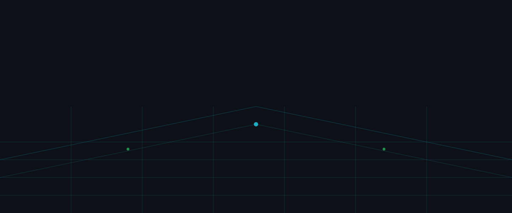

Cybersecurity
Modern threat detection, SOC visibility, and incident response aligned to NIST and SOC 2.
Sovereign IT Services delivers a unified security, cloud, and infrastructure platform engineered for environments where uptime, compliance, and trust are non‑negotiable.
We help tribal governments and mission‑critical organizations modernize securely — integrating cybersecurity, cloud operations, physical security, and networking into a single, resilient architecture.

Modern threat detection, SOC visibility, and incident response aligned to NIST and SOC 2.
Secure AWS/Azure landing zones, identity governance, and data protection frameworks.
Integrated surveillance, access control, and unified physical‑digital risk management.
High‑availability fiber, wireless, and SD‑WAN for distributed tribal and enterprise sites.
A unified model connecting tribal government, data center, cloud, and endpoint environments.

Systems designed to anticipate, withstand, recover, and evolve.
SOC 2, NIST CSF, CJIS, HIPAA, and tribal governance frameworks.
Data ownership, transparency, and long‑term sustainability for tribal nations.